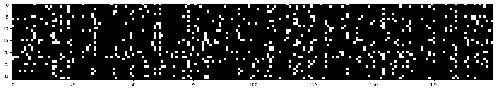

import random
import torch
import torch.nn.functional as F
import matplotlib.pyplot as plt
import numpy as npDeveloping a character-prediction n-gram model using MLP - version 3
In this notebook, we will work on the following goals:
Understand the activation steps within a neural network and the gradients that are flowing back through the network
How to do effective initialization of weights
Import dependencies
Read the data file and create a mapping for all characters
with open("data/names.txt") as file:
words = file.read().splitlines()
file.close()
print("Total words in the data:",len(words))
# Create the lookup for character indices including a start and end of line character to the all_chars list
all_chars = sorted(list(set("".join(words)))+["*"])
stoi = {s:i for i, s in enumerate(all_chars)}
itos = {i:s for s, i in stoi.items()}
print(f"{stoi=}\n{itos=}")Total words in the data: 55649
stoi={' ': 0, '*': 1, '-': 2, '.': 3, 'a': 4, 'b': 5, 'c': 6, 'd': 7, 'e': 8, 'f': 9, 'g': 10, 'h': 11, 'i': 12, 'j': 13, 'k': 14, 'l': 15, 'm': 16, 'n': 17, 'o': 18, 'p': 19, 'q': 20, 'r': 21, 's': 22, 't': 23, 'u': 24, 'v': 25, 'w': 26, 'x': 27, 'y': 28, 'z': 29}
itos={0: ' ', 1: '*', 2: '-', 3: '.', 4: 'a', 5: 'b', 6: 'c', 7: 'd', 8: 'e', 9: 'f', 10: 'g', 11: 'h', 12: 'i', 13: 'j', 14: 'k', 15: 'l', 16: 'm', 17: 'n', 18: 'o', 19: 'p', 20: 'q', 21: 'r', 22: 's', 23: 't', 24: 'u', 25: 'v', 26: 'w', 27: 'x', 28: 'y', 29: 'z'}Set some parameters
vocab_size = len(all_chars) # vocabulary size
context_length = 3 # no of characters in context for prediction
embed_size = 10 # embedding vector length for each character
n_hidden = 200 # number of neurons in the hidden layer
min_batch_size = 32 # batch size in each gradient descent iteration
# Print parameters
print(f"{vocab_size=}\n{context_length=}\n{embed_size=}\n{n_hidden=}\n{min_batch_size=}")vocab_size=30
context_length=3
embed_size=10
n_hidden=200
min_batch_size=32Build the training, validation and test datasets
def build_dataset(words, context_length = context_length):
xs, ys = [], []
for word in words:
chs = "*"*context_length+word+"*"
#print(word)
for ind in range(len(chs) - context_length):
ch1 = chs[ind:ind+context_length]
ch2 = chs[ind+context_length]
#print(f"{ch1} ----> {ch2}")
xs.append([stoi[ch] for ch in ch1])
ys.append(stoi[ch2])
xs = torch.tensor(xs) # 10X3
ys = torch.tensor(ys) # 10
print(xs.shape, ys.shape)
return xs, ys
random.shuffle(words)
n1 = int(0.8*len(words))
n2 = int(0.9*len(words))
n1, n2
xstr, ystr = build_dataset(words[:n1])
xsdev, ysdev = build_dataset(words[n1:n2])
xstest, ystest = build_dataset(words[n2:])torch.Size([404769, 3]) torch.Size([404769])
torch.Size([50471, 3]) torch.Size([50471])
torch.Size([50452, 3]) torch.Size([50452])Initialize the neural network
g = torch.Generator().manual_seed(4524757136458)
C = torch.randn(size = (vocab_size, embed_size), generator=g)
W1 = torch.randn(size = (context_length * embed_size,n_hidden), generator=g)
b1 = torch.randn(size = (n_hidden,), generator=g)
W2 = torch.randn(size = (n_hidden, vocab_size), generator=g)
b2 = torch.rand(size = (vocab_size,), generator=g)
parameters = [C, W1, b1, W2, b2]
# collect all the parameters
for p in parameters:
p.requires_grad = True
print("Number of parameters:", sum(p.nelement() for p in parameters))Number of parameters: 12530Train the neural network
n_iters = 200000
lossi = []
learning_rate = 0.2
for i in range(n_iters):
# construct minibatch by sampling indices from training dataset
ix = torch.randint(0, xstr.shape[0], (min_batch_size,), generator=g)
Xb, Yb = xstr[ix], ystr[ix] # Batch X, Y
# forward pass
xemb = C[Xb].view(min_batch_size, context_length*embed_size) # embed the characters into vectors and concatenate the vectors
hpreact = (xemb @ W1 + b1) # hidden layer pre-activation
h = torch.tanh(hpreact) # hidden layer
logits = h @ W2 + b2 # output layer
loss = F.cross_entropy(logits, Yb) # loss function
if i%10000 == 0:
print(f"Loss at iteration {i:7d} /{n_iters:7d}: {loss.item():.4f}")
# Backward pass
for p in parameters:
p.grad = None
loss.backward()
# Update parameters
if i < 10000:
lr = learning_rate
elif 10000 <= i < 50000:
lr = learning_rate/10
else:
lr = learning_rate/100
for p in parameters:
p.data += -lr*p.grad
# track statistics
lossi.append(loss.item())
print(f"{loss.item()}")
#The above loss is just for the minibatch. Calculating loss for the full training data and validation data later.Loss at iteration 0 / 200000: 23.6941
Loss at iteration 10000 / 200000: 2.8908
Loss at iteration 20000 / 200000: 2.0903
Loss at iteration 30000 / 200000: 2.0194
Loss at iteration 40000 / 200000: 1.8330
Loss at iteration 50000 / 200000: 2.2588
Loss at iteration 60000 / 200000: 2.1012
Loss at iteration 70000 / 200000: 2.2988
Loss at iteration 80000 / 200000: 1.9204
Loss at iteration 90000 / 200000: 1.9707
Loss at iteration 100000 / 200000: 1.9875
Loss at iteration 110000 / 200000: 2.1502
Loss at iteration 120000 / 200000: 1.8993
Loss at iteration 130000 / 200000: 1.9328
Loss at iteration 140000 / 200000: 2.0698
Loss at iteration 150000 / 200000: 1.7200
Loss at iteration 160000 / 200000: 2.0529
Loss at iteration 170000 / 200000: 1.8471
Loss at iteration 180000 / 200000: 2.1751
Loss at iteration 190000 / 200000: 2.0163
1.834747552871704# It can be useful to plot logloss instead of loss
plt.figure()
plt.plot(np.arange(n_iters), np.log10(lossi))
plt.xlabel("iteration")
plt.ylabel("Log loss")Text(0, 0.5, 'Log loss')Evaluation code
- Calculate the loss for selected split of the data - train, dev, or test
@torch.no_grad() # this decorator disables gradient tracking
# We can also use a context manager (look this up)
def calculate_split_loss(split):
# get the appropriate x an y based on the desired data split
x,y = {
"train": (xstr, ystr),
"val":(xsdev, ysdev),
"test": (xstest, ystest)
}[split]
xemb = C[x].view(-1,context_length*embed_size)
#xembcat = xemb
xh = (xemb @ W1 + b1).tanh()
logits = xh @ W2 + b2
loss = F.cross_entropy(logits, y)
print(split, loss.item())
calculate_split_loss('train')
calculate_split_loss('val')train 2.01993989944458
val 2.0429399013519287Sample from the model
start_char = "*"
end_char = "*"
g = torch.Generator().manual_seed(123434)
start_ind = stoi[start_char]
for _ in range(20):
context = [start_ind]*context_length
all_chars = [start_char]*context_length
while True:
# Now context contains the three character indices for our example
xembp = C[torch.tensor(context)].view(1, -1) # Want to generate just one character at a time.
xhp = (xembp @ W1 + b1).tanh()
logitsp = xhp @ W2 + b2
# Directly use the softmax function to calculate probabilites from logits
probsp = F.softmax(logitsp, dim = 1)
ind = torch.multinomial(probsp, num_samples = 1, replacement = True, generator = g)
ch = itos[ind.item()]
if (ch == end_char):
all_chars.append(ch)
break
else:
all_chars.append(ch)
context = context[1:]+[ind.item()]
print("".join(all_chars[2:]))*tevanshi*
*kashivik*
*matararavu*
*aash*
*theralini*
*rini*
*baraj*
*aswitha*
*gar*
*san*
*gugan*
*harnisheesh*
*enpugaree*
*agrikharnapeeva*
*mathurdhalakiya*
*yani*
*tarenashwaduban*
*bany*
*druswa*
*grith*Expected loss at initialization
-torch.tensor(1./vocab_size).log()tensor(3.4012)We expect a loss of about 3.4 at initialization, but right now we are getting a loss of about 27
If our logits are big numbers, we start to get very high losses. Therefore, at initialization, we want logits to either be equal for all output possibilities or close to and distributed around zero and not arbitrarily high numbers.
Inspect and play with the logits and other intermediate values at initialization
Re-initialize the neural network
g = torch.Generator().manual_seed(4524757136458)
C = torch.randn(size = (vocab_size, embed_size), generator=g)
W1 = torch.randn(size = (context_length * embed_size,n_hidden), generator=g) * (5/3)/((context_length*embed_size)**0.5) #0.2
b1 = torch.randn(size = (n_hidden,), generator=g) * 0.01
W2 = torch.randn(size = (n_hidden, vocab_size), generator=g) * 0.01
b2 = torch.rand(size = (vocab_size,), generator=g) * 0
parameters = [C, W1, b1, W2, b2]
# collect all the parameters
for p in parameters:
p.requires_grad = True
print("Number of parameters:", sum(p.nelement() for p in parameters))Number of parameters: 12530Training loop
n_iters = 200000
lossi = []
learning_rate = 0.2
for i in range(n_iters):
# construct minibatch by sampling indices from training dataset
ix = torch.randint(0, xstr.shape[0], (min_batch_size,), generator=g)
Xb, Yb = xstr[ix], ystr[ix] # Batch X, Y
# forward pass
xemb = C[Xb].view(min_batch_size, context_length*embed_size) # embed the characters into vectors and concatenate the vectors
hpreact = (xemb @ W1 + b1) # hidden layer pre-activation
h = torch.tanh(hpreact) # hidden layer
logits = h @ W2 + b2 # output layer
loss = F.cross_entropy(logits, Yb) # loss function
if i%10000 == 0:
print(f"Loss at iteration {i:7d} /{n_iters:7d}: {loss.item():.4f}")
# Backward pass
for p in parameters:
p.grad = None
loss.backward()
# Update parameters
if i < 10000:
lr = learning_rate
elif 10000 <= i < 50000:
lr = learning_rate/10
else:
lr = learning_rate/100
for p in parameters:
p.data += -lr*p.grad
# track statistics
lossi.append(loss.item())
#break
print(f"{loss.item()}")Loss at iteration 0 / 200000: 3.3886
Loss at iteration 10000 / 200000: 2.2922
Loss at iteration 20000 / 200000: 1.9685
Loss at iteration 30000 / 200000: 1.9407
Loss at iteration 40000 / 200000: 1.7619
Loss at iteration 50000 / 200000: 2.0589
Loss at iteration 60000 / 200000: 1.9139
Loss at iteration 70000 / 200000: 2.2412
Loss at iteration 80000 / 200000: 1.7218
Loss at iteration 90000 / 200000: 1.9227
Loss at iteration 100000 / 200000: 1.8951
Loss at iteration 110000 / 200000: 2.0498
Loss at iteration 120000 / 200000: 1.7472
Loss at iteration 130000 / 200000: 1.8809
Loss at iteration 140000 / 200000: 2.0456
Loss at iteration 150000 / 200000: 1.6247
Loss at iteration 160000 / 200000: 1.8501
Loss at iteration 170000 / 200000: 1.6803
Loss at iteration 180000 / 200000: 1.9745
Loss at iteration 190000 / 200000: 1.9393
1.6462198495864868we can look at the output coming out of the hidden layer as an image. In the image, white represents true and black represents false. There shouldnt be too much white in this.
plt.figure(figsize = (20,10))
plt.imshow(h.abs() > 0.99, cmap = 'gray', interpolation = 'nearest')
plt.plot(np.log10(lossi))calculate_split_loss('train')
calculate_split_loss('val')train 1.9266620874404907
val 1.9444915056228638
Note
I am re-running cells in the notebook, so the output of the cells below will not show the logits and intermediate values obtained without any modification of parameter initialization.
Look at logit values
logits[0]tensor([-0.5982, 3.6528, -2.8297, -2.2792, 5.4065, -1.6365, -1.7818, -1.1617,
3.6341, -3.5775, -2.0176, -0.5987, 5.7543, -0.4845, -0.5263, -0.9710,
1.0501, 1.4979, 0.3084, -1.1211, -3.1393, 1.9131, 0.6301, 0.4942,
2.9674, 1.1781, -0.7974, -4.0875, 3.0433, -3.8424],
grad_fn=<SelectBackward0>)Look at values of h
h.shape # h is 32Xn_hidden because size of mini-batch is 32
h.view(-1).tolist() # Create a list
plt.figure()
plt.title("values coming out of the hidden layer")
plt.hist(h.view(-1).tolist(), bins = 50);
plt.figure()
plt.hist(hpreact.view(-1).tolist(), bins = 50)
plt.title("value of preactivations feeding into the tanh function")Text(0.5, 1.0, 'value of preactivations feeding into the tanh function')Logits: - If we look at logits from random uniform initialization, well see that the numbers are very high, as much as 18. Since logit calculation depends on W2 and b2, we can fix this by reducing W2 and b2.
If I scale down W2 by 0.01 and make b2=0, I get an initial loss of about 3.43, which is close to what we expect from uniform distribution of probabiltiies
We dont want weights of a neural network layer exactly to be zero because
Just by initializing the logits to be small, we can get the training loss and validation loss down from 2.024 and 2.044 to 1.942 and 1.957
h - output of hidden layer: - If we look at values of h, we will see that too many values are in the flat regions of tanh, i.e., -1 or +1. In these regions, gradients are approximately zero and therefore will not affect parameters much. - The values coming from tanh are in the +1 and -1 region, because the preactivations feeding into the tanh function take on very large positive and negative values. - if for any neuron, all the inputs turn out to be in the flat region of tanh, it would never learn in that batch and it would be a dead neuron, because all gradients would be zero. - We can reduce the values of preactivation by reducing W1 and b1 - Fixing the above reduces loss a little bit as well to 1.938 for train and 1.950 for val. - We are improving on losses because due to better initialization, we spend more cycles actually optimizing than fixing initialization issues.
- With deeper networks - example 50 layers - these problems stack up and deeper networks become less forgiving to problems like initialization.
How to set scales for layer weights that help with less tanh saturation and smaller logit values at initialization
Visualize the problem first.
Look at statistics of gaussian distributions at initialization and when they go through computations like matrix multiplication
# Generate random numbers first
x = torch.randn(1000, 10)
W = torch.randn(10, 200)
y = x @ W
print(x.mean(), x.std())
print(W.mean(), W.std())
print(y.mean(), y.std())
fig, ax = plt.subplots(2, 1, sharex = True)
ax[0].hist(x.view(-1).tolist(), 50, density = True);
ax[0].set_title("Initialization from normal distribution");
ax[1].hist(y.view(-1).tolist(), 50, density = True);
ax[1].set_title("Distribution after matrix multiplication of two parameters\n initialized independently from normal distribution");
fig.tight_layout();tensor(-0.0117) tensor(0.9936)
tensor(-0.0033) tensor(0.9988)
tensor(0.0127) tensor(3.1360)We see that after matrix multiplication, the standard deviation of the resulting distributin increases. Thereforem the question is how do we scale W to preserve standard deviation to be 1.
Mathematically, to preserve the standard deviation after matrix multiplication, we divide by the square root of fan_in, which is the number of input elements to the next layer
x = torch.randn(1000, 10)
W = torch.randn(10, 200) / 10**0.5
y = x @ W
print(x.mean(), x.std())
print(W.mean(), W.std())
print(y.mean(), y.std())
fig, ax = plt.subplots(2, 1, sharex = True)
ax[0].hist(x.view(-1).tolist(), 50, density = True);
ax[0].set_title("Initialization from normal distribution");
ax[1].hist(y.view(-1).tolist(), 50, density = True);
ax[1].set_title("Distribution after matrix multiplication of two parameters\n initialized independently from normal distribution \n after scaling the weights");
fig.tight_layout();tensor(-0.0042) tensor(1.0093)
tensor(-0.0041) tensor(0.3148)
tensor(-0.0020) tensor(1.0038)A paper that explains these scaling factors to maintain good distributions throughout a neural network during initialization is Kaiming He et al. 2015. They studied convolutional neural networs and they studied ReLU and PReLU non-linearities. In their analysis of forward activation of the neural net, they find that instead of reducing weights by sqrt(fan_in), they also have to multiply by a gain to account for half of the numbers being discarded in ReLU.
Kaiming normalization is also implemented in pytorch in torch.nn.init.kaiming_normal. The documentation page for this function provides the gains for different non-linearities.
Intuitively, we need a gain because non-linearities like tanh or ReLU are squasing functions that narrow the distribution. Therefore, we need a small gain to counter the squashing.
There are modern techniques that counter some of the issues with incorrect normalizations: - residul connections - normalization layers like batch normalizations, layer normalizations etc. - better optimizers like Adam.
In practice, scale the std of weights by gain/sqrt(fan_in), which means multiplying normally initialized weights by the factor above.
Batch normalization
Mititgates some of the issues associated with incorrect initialization.
We want all intermediate pre-activation states to neither be too small, because then tanh layer is not doing much or too large, because then tanh layer is saturated. We want these to be roughly Gaussian with unit standard deviation and zero mean at initialization.
Batch normalization says that we should directly normalize the pre-activate states to be unit Gaussian.
We can do the above, because standardization hidden pre-activation states, i.e., subtracting the mean and dividing by standard deviation is a differentiable operation.
We want to do this standardization at initialization but not at every training loop because we want the pre-activations to move around as needed during the training loop. So we use the concept of scale and shift by introducing two new parameters - gain and bias.
Simple batch normalization takes longer to train than a neural net without batch normalization.
its customary to add batch norm layers after every linear layer because it significantly stabilizes the training.
Batch normalization couples different training examples(in the mini-batch) mathematically. We can think of this as regularization because this coupling pads out the effect of any one example based on whatever other examples happen to be in the batch with it. This makes it hard for neural net to overfit to any given training example.
batch normalization can cause a lot of bugs in the code because training examples are coupled. Therefore, other normalization techniques are used which do not couple training examples, but its property of regularizing effect makes it widely used.
Since during training, we are coupling all examples in a mini-batch to calculate a single mean and standard deviation, we have a problem. At validation time, we only feed in a single example, so how do we get the neural network to predict something with only one example and not a mini-batch? We can deal with the above in two ways:
- Calculate a bnmean and bnstd after the training is finished for the whole dataset and then use it during validation.
- Keep a running log of bnmean and bnstd during training and use it later during validation. This approach is preferred in practice.
The running mean and running standard deviation of the batchnorm layer are also called buffers as these are calculated and updated during training but not through backpropagation as with other parameters.
Since we are standardizing the preactivations, the initial bias we added will not be used and we dont want to use bias as bias is added by the batchnorm layer.
Initialize the neural network
g = torch.Generator().manual_seed(4524757136458)
C = torch.randn(size = (vocab_size, embed_size), generator=g)
W1 = torch.randn(size = (context_length * embed_size,n_hidden), generator=g) * (5/3)/((context_length*embed_size)**0.5) #0.2
#b1 = torch.randn(size = (n_hidden,), generator=g) * 0.01
W2 = torch.randn(size = (n_hidden, vocab_size), generator=g) * 0.01
b2 = torch.rand(size = (vocab_size,), generator=g) * 0
bngain = torch.ones(size = (1, n_hidden)) # Because these are 1 at initialization, we have unit gaussian distribution at initialization and the distribution can shift as training proceeds.
bnbias = torch.zeros(size = (1, n_hidden))
bnmean_running = torch.zeros(size = (1, n_hidden)) # at initialization, the mean of preactivations is roughly 0
bnstd_running = torch.ones(size = (1, n_hidden)) # at initialization the std of pre-activations is roughly 1
parameters = [C, W1, W2, b2, bngain, bnbias]
# collect all the parameters
for p in parameters:
p.requires_grad = True
print("Number of parameters:", sum(p.nelement() for p in parameters))Number of parameters: 12730Training loop:
n_iters = 200000
lossi = []
learning_rate = 0.2
for i in range(n_iters):
# construct minibatch by sampling indices from training dataset
ix = torch.randint(0, xstr.shape[0], (min_batch_size,), generator=g)
Xb, Yb = xstr[ix], ystr[ix] # Batch X, Y
# forward pass
# embedding layer
xemb = C[Xb].view(min_batch_size, context_length*embed_size) # embed the characters into vectors and concatenate the vectors
# Linear layer
hpreact = xemb @ W1# + b1 # hidden layer pre-activation
# Batch Norm Layer
# --------------------
bnmeani = hpreact.mean(dim = 0, keepdim = True) # bnmean ith iteration
bnstdi = hpreact.std(dim = 0, keepdim = True)
hpreact = bngain*((hpreact - bnmeani)/(bnstdi)) + bnbias # Standardize the pre-activation values to be unit gaussian
with torch.no_grad(): # do not compute gradients for these computations
bnmean_running = 0.999 * bnmean_running + 0.001 * bnmeani
bnstd_running = 0.999 * bnstd_running + 0.001 * bnstdi
# ------------------------
# non-linearity
h = torch.tanh(hpreact) # hidden layer
# output layer
logits = h @ W2 + b2 # output layer
# loss calculation
loss = F.cross_entropy(logits, Yb) # loss function
if i%10000 == 0:
print(f"Loss at iteration {i:7d} /{n_iters:7d}: {loss.item():.4f}")
# Backward pass
for p in parameters:
p.grad = None
loss.backward()
# Update parameters
if i < 10000:
lr = learning_rate
elif 10000 <= i < 50000:
lr = learning_rate/10
else:
lr = learning_rate/100
for p in parameters:
p.data += -lr*p.grad
# track statistics
lossi.append(loss.item())
#break
print(f"{loss.item()}")Loss at iteration 0 / 200000: 3.4106
Loss at iteration 10000 / 200000: 1.9552
Loss at iteration 20000 / 200000: 2.5670
Loss at iteration 30000 / 200000: 2.2542
Loss at iteration 40000 / 200000: 2.0727
Loss at iteration 50000 / 200000: 1.8331
Loss at iteration 60000 / 200000: 2.2747
Loss at iteration 70000 / 200000: 2.0865
Loss at iteration 80000 / 200000: 1.8507
Loss at iteration 90000 / 200000: 2.5262
Loss at iteration 100000 / 200000: 2.2370
Loss at iteration 110000 / 200000: 2.2191
Loss at iteration 120000 / 200000: 2.0212
Loss at iteration 130000 / 200000: 1.7962
Loss at iteration 140000 / 200000: 1.8132
Loss at iteration 150000 / 200000: 1.9622
Loss at iteration 160000 / 200000: 1.9555
Loss at iteration 170000 / 200000: 1.8946
Loss at iteration 180000 / 200000: 2.0191
Loss at iteration 190000 / 200000: 1.5637
2.301938533782959plt.plot(np.log10(lossi));@torch.no_grad() # this decorator disables gradient tracking
# We can also use a context manager (look this up)
def calculate_split_loss(split):
# get the appropriate x an y based on the desired data split
x,y = {
"train": (xstr, ystr),
"val":(xsdev, ysdev),
"test": (xstest, ystest)
}[split]
xemb = C[x].view(-1,context_length*embed_size)
#xembcat = xemb
hpreact = xemb @ W1 #+ b1
#hpreact = bngain*((hpreact - hpreact.mean(dim = 0, keepdim = True))/(hpreact.std(dim = 0, keepdim = True))) + bnbias
hpreact = bngain * ((hpreact - bnmean_running)/bnstd_running) + bnbias
xh = torch.tanh(hpreact)
logits = xh @ W2 + b2
loss = F.cross_entropy(logits, y)
print(split, loss.item())
calculate_split_loss('train')
calculate_split_loss('val')train 1.9572734832763672
val 1.9717477560043335Tracking losses
Original loss - without any optimization Train - 2.024 Val - 2.044
Fix: logits (softmax being confidently wrong and assigning large probabilities to one character) Train - 1.942 Val - 1.957
Fix: tanh layer being too saturated at initialization Train - 1.938 Val - 1.950
Fix: scale W1 using Kaiming initialization factor Train - 1.928 Val - 1.942
Fix: Add simple batchnormalization. We dont expect batch normalization to do much here because its a shallow network and we have already scaled W1. We see that in this case it makes the losses worse. Train - 1.959 Val - 1.972 The above remain the same when we calculate running mean and running std for the batch norm layer. It also remains the same after removing the bias term in the linear layer before batch norm layer.